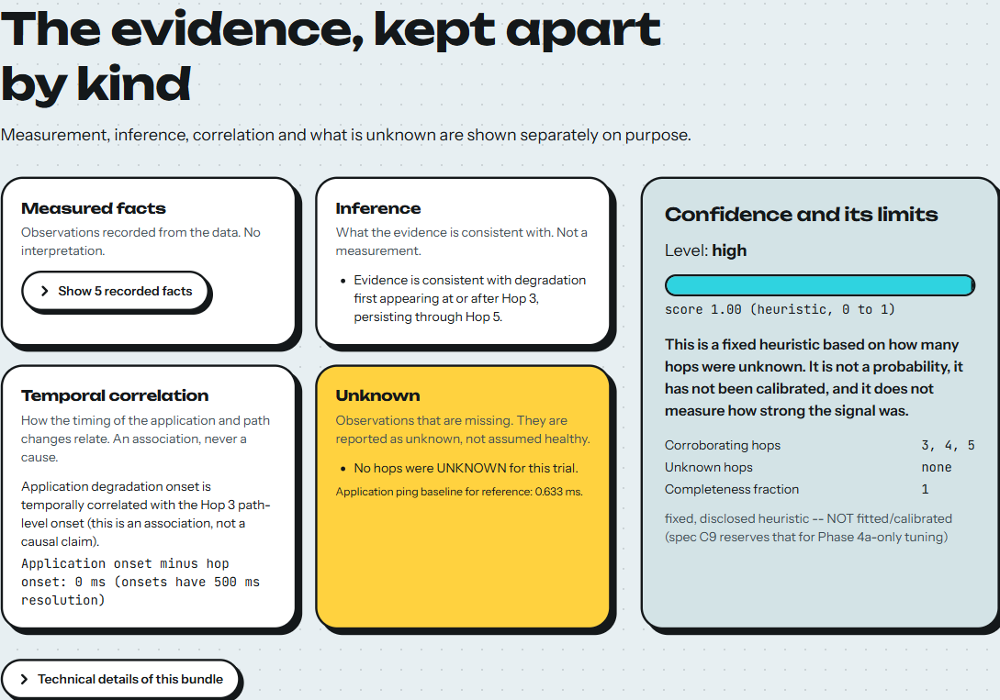
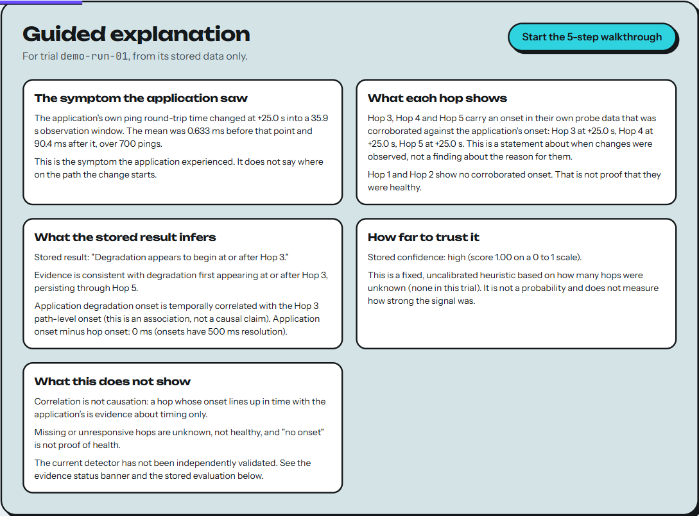
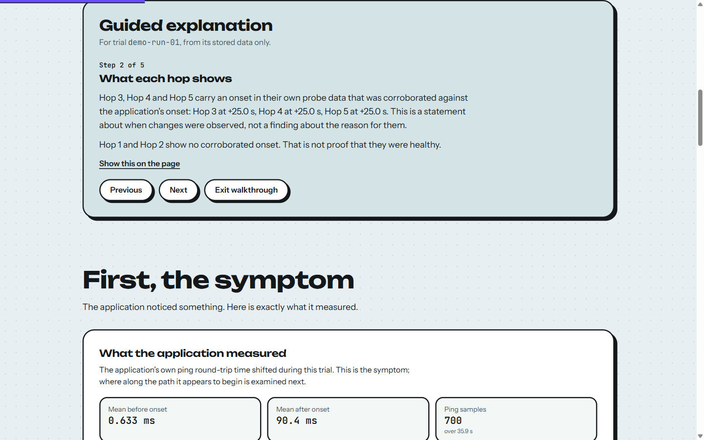
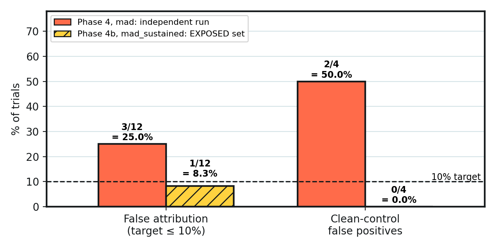

Below the boundary statement ("Degradation appears to begin at or after Hop 3. This is the earliest hop whose onset is corroborated in the stored data. It is a statement about when changes were observed, not a finding about the reason for them.") the page separates the evidence into measured facts, inference, temporal correlation and unknown, and shows the stored confidence with its limits: level and score, an explicit statement that it is a fixed heuristic and not a probability, the corroborating and unknown hops, and the completeness fraction.

demo-run-01. The unknown panel states that missing observations are reported as unknown, "not assumed healthy". The confidence panel states that the score is "a fixed heuristic … not a probability … not calibrated".The Guided explanation toggle (off by default) adds a plain-language walkthrough built only from the selected bundle: it states the symptom the application saw, what each hop shows, what the stored result infers, how far to trust it, and what the result does not show. A five-step walkthrough (Previous / Next / Exit) moves through the same material and can scroll to the matching part of the page. A clean-control trial is explained in distinct wording (no degradation detected, which does not prove health).

demo-run-01, including "What this does not show": correlation is not causation; unknown is not healthy; the current detector has not been independently validated.
guided.test.tsx (11 tests) and by check:preview.Further captures (stored evaluation, limitations, the no-degradation result and the partially-localized result) are in Appendix D.
This section reports checks that were actually run on 27 October 2026 for this report, in the environments named. Earlier counts quoted in other project documents were not reused. Unit tests, integration and browser checks, and the experimental evaluation are kept separate; the experimental results are in Section 12.
| Layer | Command | Result (27 Oct 2026) |
|---|---|---|
| Python unit tests | python3 -B -m unittest discover per test directory | 117 tests, all OK (WSL2 Ubuntu 24.04, Python 3.12.3, unprivileged user) |
| Repository hygiene | python3 tools/check_repo_hygiene.py | OK: 59 source files, no per-user paths, no CR characters, .gitattributes present |
| Frontend typecheck | npm run typecheck | passes (tsc -b --force, strict) |
| Frontend lint | npm run lint | passes with --max-warnings 0 |
| Frontend tests | npm test | 310 tests in 14 files, all passed (vitest 5.0.4, jsdom) |
| Production build | npm run build | built; one ~511 kB script (not code-split; vite warns about chunk size) |
| Distribution safety | npm run verify:dist | OK: 21 files (4 bundles, 2 evaluation projections, 1 index); no raw traces, databases, labels, credentials or remote runtime dependencies |
| Real-browser layout | npm run check:layout | OK: 40 checks (10 widths × 4 real trials): no horizontal overflow, no overlapping hop labels or text, all hop controls ≥ 44 px |
| Real-browser interaction | npm run check:preview | OK: 4 trials switched in one session against vite preview; every bundle HTTP 200 JSON and rendered; packet pause/resume; guided walkthrough steps 1-5; prohibited URLs return no data |
| Live testbed | setup_topology.sh + verify_topology.sh | PASS: 200/200 packets (0% loss); five hops in order, twice (Section 8.5) |
| Directory | Tests | Modules under test |
|---|---|---|
prober/tests | 9 | hopsample.py (record shape and (de)serialization), raw_probe.py (checksum and ICMP parsing) |
app/tests | 10 | ws_protocol.py (RFC 6455 framing and handshake), apprttsample.py |
correlate/tests | 38 | synchronize, onset, the Phase 4 and Phase 4b candidate detectors, align, evidence |
evaluate | 16 | metrics.py (false attribution, hop matching, Wilson interval, summaries) |
present/tests | 29 | interpret (locked sentences, forbidden causal phrases), technical_view, path_bundle (hop status re-expresses stored evidence; run against real recorded trials) |
faultctl/tests | 15 | controller.py (authorized targets, tc argument construction; tc is mocked) and groundtruth.py (store, with the database path patched to a temporary directory) |
| Total | 117 |
The tests were run from a Windows-mounted path inside WSL2 (/mnt/c/…) as a normal user (uid 1000) with bytecode writing disabled; the faultctl tests print a stray event UUID, which is expected. They do not need root and cannot write the real ground-truth database. They do not exercise the live network testbed.
| Test file | Tests | Covers |
|---|---|---|
vite/dataAllowlist.test.ts | 49 | Which stored files may be served; traversal and non-allowlisted paths refused |
vite/devServer.test.ts | 40 | Starts the real dev server and probes about forty traversal / ground-truth / trace / config URLs |
vite/previewServer.test.ts | 38 | Builds the site and fetches all four bundles over HTTP from vite preview |
vite/devSourceGuard.test.ts | 29 | Dev server hides its own non-source files |
src/components/RttChart.test.tsx | 34 | RTT chart geometry and rendering |
src/stageC.test.tsx | 26 | The visual experience: path, hop inspector, statements, accessibility |
src/App.test.tsx | 19 | Application states: loading, error, trial switching |
src/data/loader.test.ts | 19 | Typed data loader and error handling |
src/design/tokens.test.ts | 16 | WCAG AA contrast of the design tokens (reads the CSS) |
src/data/schema.test.ts | 14 | Bundle schema validation (Zod) against real artifacts |
src/guided.test.tsx | 11 | Guided explanation and walkthrough |
src/components/primitives/primitives.test.tsx | 9 | Badge, pill, sticker and disclosure components |
src/data/evaluationStatus.test.ts, src/styles/packets.test.ts | 3 + 3 | Evaluation status projection; packet animation rules |
| Total | 310 | 14 files |
# Python tests (WSL2, from the repository root, no root needed) for d in prober/tests app/tests correlate/tests evaluate present/tests faultctl/tests; do PYTHONDONTWRITEBYTECODE=1 python3 -B -m unittest discover -s "$d" -p 'test_*.py' || break done python3 tools/check_repo_hygiene.py # Frontend (from frontend/, Node >= 22.12) npm ci npm run verify # typecheck, lint, test, build, verify:dist npm run check:layout # needs Chrome or Edge npm run check:preview # needs Chrome or Edge
demo/run_demo.sh) was not re-run: it creates identities, rebuilds the topology and overwrites the recorded experiments/demo-run-01. The recorded trial is documented as produced by an earlier real run.evaluate/tuning_analysis*.py, held_out_evaluation*.py, diagnose_phase4b.py, pilot_analysis.py) were deliberately not re-run: they read ground truth and overwrite the frozen configurations and result files.All figures are quoted verbatim from evaluate/held_out_results.json (Phase 4) and evaluate/held_out_results_4b.json (Phase 4b); the report build asserts them. The evaluation sets contain 12 trials each: 8 fault trials and 4 clean controls. Every rate below rests on a very small sample and should be read as rough.
mad on the held-out set (independent)The Phase 4 configuration (mad, k_mad = 5.0, Δ = 1.5 s) was frozen from the tuning set and scored once on the 12 held-out trials before any retuning.
held_out_results.json)| Metric | Result | Wilson 95% interval | Reading |
|---|---|---|---|
| False attribution (target ≤ 10%) | 3/12 = 25.0% | 8.9% – 53.2% | Target missed. Two confident claims on clean controls, one wrong confident claim. |
| Clean-control false positives | 2/4 = 50% | 15.0% – 85.0% | Two of four clean controls received a high-confidence claim. |
| Exact first hop (localized trials) | 2/3 = 66.7% | 20.8% – 93.9% | Only three fault trials produced a claim. |
| Within ±1 hop (localized trials) | 3/3 = 100% | 43.8% – 100% | Denominator is only the trials that were localized. |
| Recall of injected faults | 3/8 = 37.5% | n/a | Five of eight faults produced no claim. |
| Precision of claims | 3/5 = 60% | n/a | |
| Brier score of confidence | 0.432 (n = 5) | n/a | Poor; the four high-confidence claims were 50% accurate. |
mad_sustained on the same set (exposed)evaluate/diagnose_phase4b.py loaded nine of the held-out traces together with their ground-truth labels and was written before the Phase 4b detector variants existed; the revised configuration was then scored on that very set. The design therefore saw the data it was later scored on. The evidence ledger marks p4-held-* permanently EXPOSED: it may be used for historical analysis and transparent reporting, but never to claim independent validation of a revised algorithm. The gate_check.overall_pass = true field in the result file is a computed comparison against thresholds, not a validation.
held_out_results_4b.json, exposed set)| Metric | Result | Wilson 95% interval | Reading |
|---|---|---|---|
| False attribution (target ≤ 10%) | 1/12 = 8.3% | 1.5% – 35.4% | Numeric threshold met on exposed data. The one false attribution is p4-held-12. |
| Clean-control false positives | 0/4 = 0% | 0% – 49.0% | The sustained-run rule removed the Phase 4 clean-control false positives. |
| Exact first hop (localized trials) | 3/4 = 75% | 30.1% – 95.4% | |
| Within ±1 hop (localized trials) | 4/4 = 100% | 51.0% – 100% | Four localized trials. |
| Recall of injected faults | 4/8 = 50% | n/a | Four of eight faults still produced no claim (all four loss and bandwidth trials). |
| Brier score of confidence | 0.040 (n = 4) | n/a | From four claims on an inspected set; not evidence of calibration. |

"Expected hop" is the first hop the injected fault could affect (min(hop_target + 1, 5)). A FA mark means the claim was scored a false attribution. These labels already appear in the repository's result files.
mad) against Phase 4b (mad_sustained); reported hop range with confidence level| Trial | Class | Expected hop | Phase 4 (independent) | Phase 4b (exposed) |
|---|---|---|---|---|
01-clean1 | clean control | none | Hops 1-5, high FA | no claim |
02-clean2 | clean control | none | no claim | no claim |
03-clean3 | clean control | none | Hops 1-5, high FA | no claim |
04-latency-hop2-moderate | latency | 3 | 3-5, high ✓ | 3-5, high ✓ |
05-jitter-hop3-mild | jitter | 4 | 4-5, high ✓ | 4-5, high ✓ |
06-loss-hop4-severe | loss | 5 | no claim (miss) | no claim (miss) |
07-bandwidth-hop1-moderate | bandwidth | 2 | no claim (miss) | no claim (miss) |
08-jitter-hop2-transient | jitter | 3 | no claim (miss) | 3-5, high ✓ |
09-bandwidth-hop3-transient | bandwidth | 4 | no claim (miss) | no claim (miss) |
10-loss-hop1-mild | loss | 2 | no claim (miss) | no claim (miss) |
11-unknown-hop1 | clean control, Hop 1 silent | none | no claim | no claim |
12-unknown-plus-impair | jitter, Hops 1-2 silent | 2 | 3-5, medium FA | 3-5, medium FA |
08) became localized. Nothing changed for loss or bandwidth, and p4-held-12 remained a false attribution. The improvement is consistent with the diagnosed mechanism (single noisy buckets crossing a near-zero absolute threshold), but it cannot be separated from the fact that the design saw these traces.p4-held-12 occurred where the first affected hop (Hop 2) was itself unknown; the detector reported the next hop. The system correctly lowered confidence to medium and shows Hops 1 and 2 as unknown, but under the project's own definition (a confident claim that is wrong) it is a false attribution.demo-run-01 is a recorded real run: a 90 ms latency impairment on the link leaving Hop 2, injected 25 s into a 35 s capture. The frozen mad_sustained pipeline reported "Degradation appears to begin at or after Hop 3", high confidence (score 1.0), corroborating Hops 3, 4 and 5, with the application and Hop 3 onsets both at +25.0 s (Figure 4, Figure 7). From the recorded files: Hop 3 probes averaged 78.53 ms over the last third of the faulted capture and 0.012 ms in a fresh 10-round probe after the fault was cleared (recovery_hop.jsonl). The scenario was chosen in the detector's favourable regime (fault covering a minority of the window) and illustrates the pipeline; it is not evidence about detector accuracy.